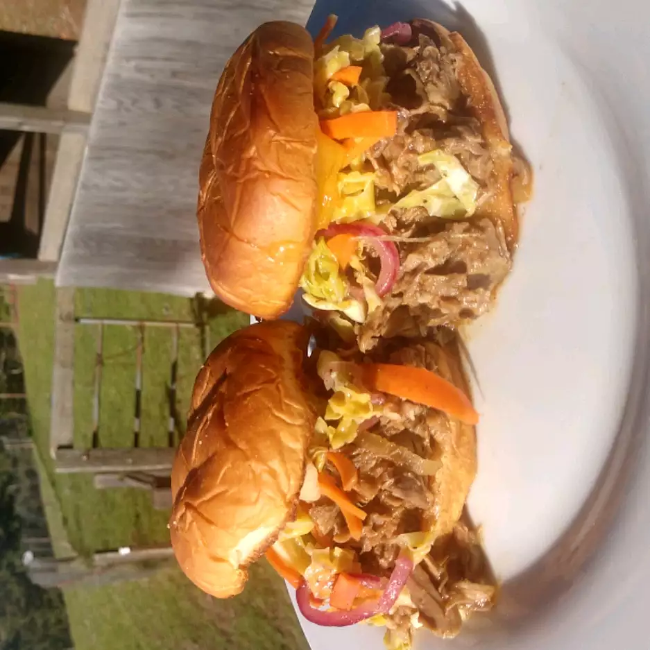

Texas Pulled pork

Slow cooked, Texas style pulled pork that is served on a buttery and toasted roll. My family's favourite
Ingredients
- 1 teaspoon vegetable oil
- 1 (4 pound) pork shoulder roast
- 1 cup barbeque sauce
- ½ cup apple cider vinegar
- ½ cup chicken broth
- ¼ cup light brown sugar
- 1 tablespoon prepared yellow mustard
- 1 tablespoon Worcestershire sauce
- 1 tablespoon chili powder
- 1 extra large onion, chopped
- 2 large cloves garlic, crushed
- 1½ teaspoons dried thyme
- 8 hamburger buns, split
- 2 tablespoons butter, or as needed